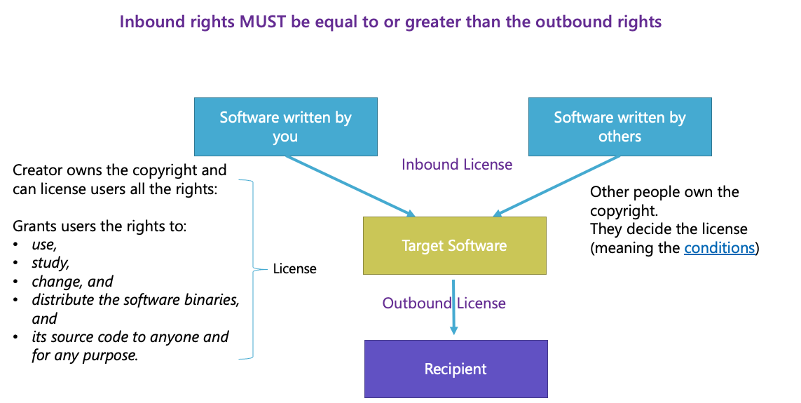
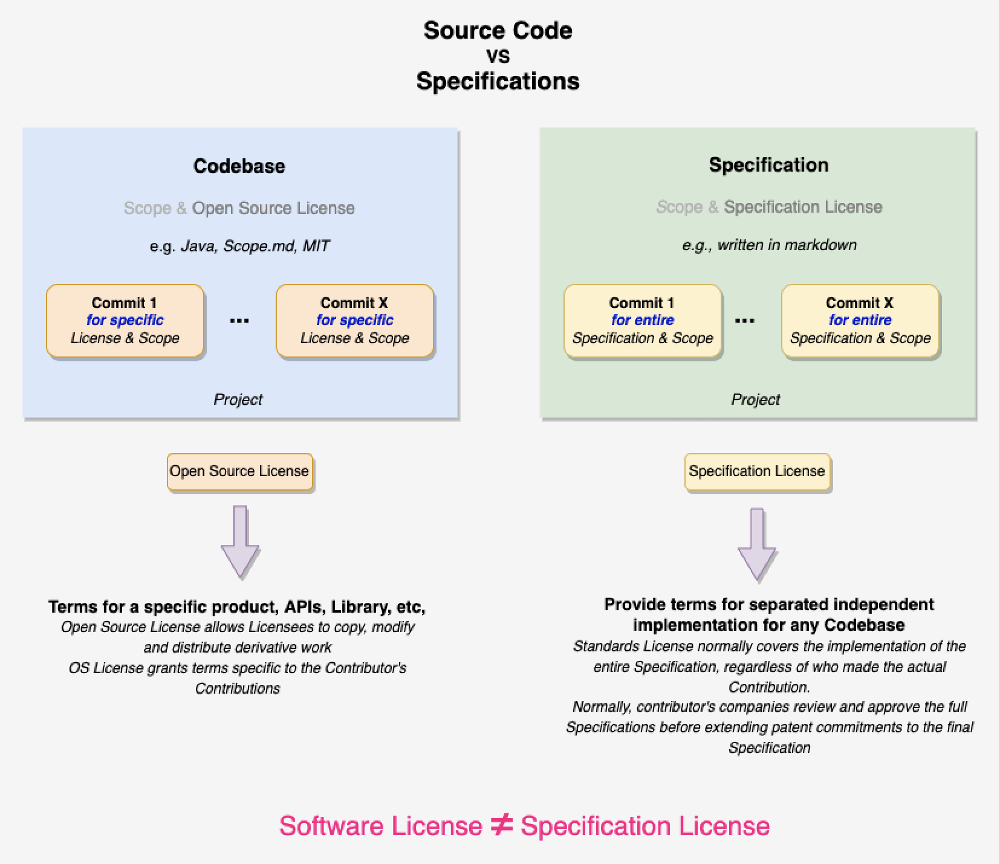
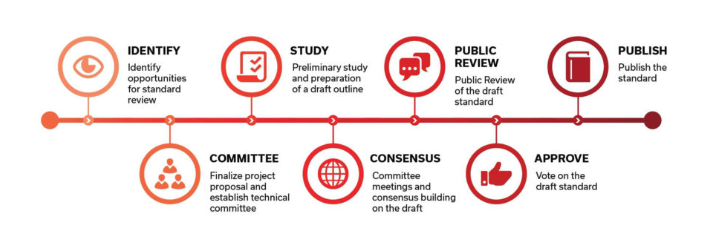
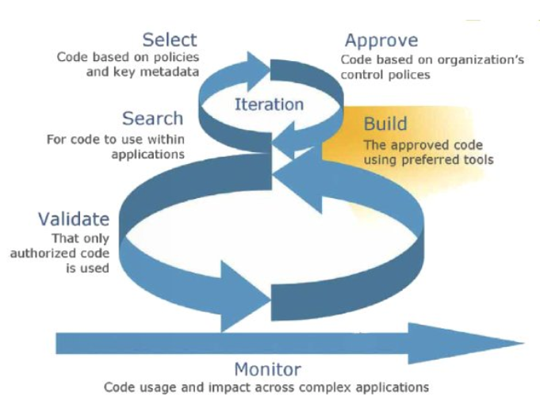

|
|
| StandardsHub Process Overview |
| Draft Version: 1.0 2022-11-19 |
| StandardsHub |
| StandardsHub_Handbook-V1_0 |
| main: 02 Mar 2025 20:04:00 rev: 28912bb |
1. Pre Formation
1.1. Objectives
In this phase you should be able to decide:
-
Type of Organization:
- Will the organization build software code, technical specifications, or both?
- Decide the type of Intellectual Property Rights (IPR) policy to use
- Budget estimation
1.2. Introduction
-
Organization Types
-
What type of Organization are you seeking to form?
- Standards Development Organization (DSO)
- Open Source Organization (OSS)
- Hybrid, DSO + OSS
-
What type of Organization are you seeking to form?
-
What type of license?
- Technical Specifications Licenses
- Open Source License
-
IPR Policies to consider
- Copyright
-
Patents
- Patent Exclusion
- Trademarks
-
Trade Secrets
-
Funding Levels
- Breakdown of items in a Finance Report
1.3. Pre Formation Overview
-
Type of Organization:
- Will the organization build software code, technical specifications, or both?
- Decide the type of Intellectual Property Rights (IPR) policy to use
1.4. Software

1.5. Software vs Specification Licenses

1.6. Organization Types
Organizations that develop:
Technical Specifications
- Standards Development Organizations
- Normally produce standards that are openly accessible and usable by anyone
- It uses an open, or a non-discriminatory license, e.g. FRAND or RAND license
- It can hold patents, royalty free or not
- Typically, anybody can participate in the development, normally membership is required.
- Standards Development Organizations
Software Code
- Open-Source Software, OSS
- It uses licenses that grant users the rights to use, study, change, distribute the sofware binaries, and its source code to anyone and for any purpose
- Open-source software is computer software that is released under a license in which the copyright holder grants users the rights to use, study, change, and distribute the software and its source code to anyone and for any purpose.
- There are different type of licenses that cover different needs.
- Closed-Source Software or proprietary software
- It uses licenses that grant less rights or impose some restrictions to the licensee.
- Proprietary software is non-free software because its creator, publisher, or other rightsholder exercises by using copyright and intellectual property law to exclude the recipient from freely sharing the software or modifying it, and—in some cases, as is the case with some patent-encumbered and thereby restricting his or her freedoms.
- It is often contrasted with open-source or free software.
- Open-Source Software, OSS
Technical Specifications & Software Code (both)
- Hybrid Organization SDO & Software Code
- An Organization that produces the Technical Specifications and also develop the corresponding software code
- It can use a combination of the above licenses
- Hybrid Organization SDO & Software Code
1.6.1. Standards Development Organizations

Source Diagram: Standards Review and Development Process- A standards organization, standards body, standards developing organization (SDO), or standards setting organization (SSO) is an organization whose primary function is developing, coordinating, promulgating, revising, amending, reissuing, interpreting, or otherwise contributing to the usefulness of technical standards to those who employ them.
- Such an organization works to create uniformity across producers, consumers, government agencies, and other relevant parties regarding terminology, product specifications (e.g. size, including units of measure), protocols, and more.
- Most standards are voluntary in the sense that they are offered for adoption by people or industry without being mandated in law.
- Some standards become mandatory when they are adopted by regulators as legal requirements in particular domains, e.g., often safety purpose or for consumer protection from deceitful practices among others.
- A Publicly Available Specification or PAS is a standardization document that closely resembles a formal standard in structure and format but which has a different development model.
- The objective of a Publicly Available Specification is to speed up standardization.
- PASs are often produced in response to an urgent market need
- Types of standards:
- The term formal standard refers specifically to a specification that has been approved by a standards setting organization.
- The term de jure standard refers to a standard mandated by legal requirements or refers generally to any formal standard.
- The term de facto standard refers to a specification (or protocol or technology) that has achieved widespread use and acceptance – often without being approved by any standards organization (or receiving such approval only after it already has achieved widespread use).
1.6.2. Source Code

Diagram: Agile Software Code DevelopmentSource: opensourceforu
1.6.2.1. Open Source Code
1.6.2.1.1. Open Source code Licenses
1.7. IPR Policies
Intellectual Property Rights (IPRs) are legal rights that protect creations and/or inventions resulting from intellectual activity in the industrial, scientific, literary or artistic fields.
Types of IPR Policies:
- Copyright
- A copyright is a type of intellectual property that gives its owner the exclusive right to copy, distribute, adapt, display, and perform a creative work, usually for a limited time. The creator is the owner of the copyright, and it can grant rights to a third party.
- Patents
- A patent is a type of intellectual property that gives its owner the legal right to exclude others from making, using, or selling an invention for a limited period of time in exchange for publishing an enabling disclosure of the invention.
- Trademarks
- A trademark is a type of intellectual property consisting of a recognizable sign, design, or expression that identifies products or services from a particular source and distinguishes them from others. The trademark owner can be an individual, business organization, or any legal entity.
Trade Secrets
1.8. License Types
Propietary Licenses
- The copyright holder keeps many or most of the rights to themselves, and often adds additional restrictions on what users can do with the software.
- Some proprietary license require an explicit acknowledgement that the user has read the license (click-through) Open Source Licenses
- Those licenses that comply with the definition of open source as defined by Open Source Initiative
- Open Source Licenses are grouped as:
Permissive or Copyleft
Permissive: the license might impose few or no requirements on the licensee, permitting use and redistribution in proprietary applications
Copyleft: the license might require redistributions to provide downstream recipients the same freedoms they received for the upstream software, or for their own works derived from it or added to it.
Patent Grant or No Patent Grant
- Patent Grant: can be either explicit specified, or implied by the text.
- No Patent Grant: associated with some licenses, which may consider not to open source license.